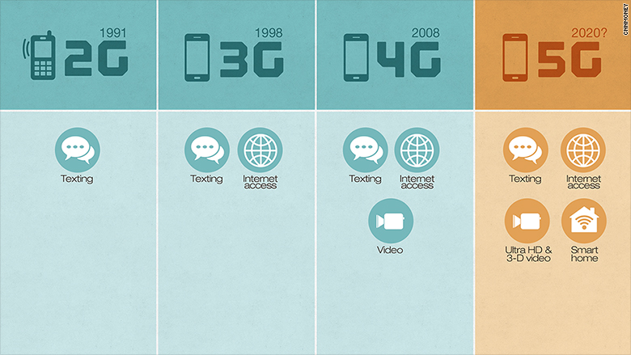
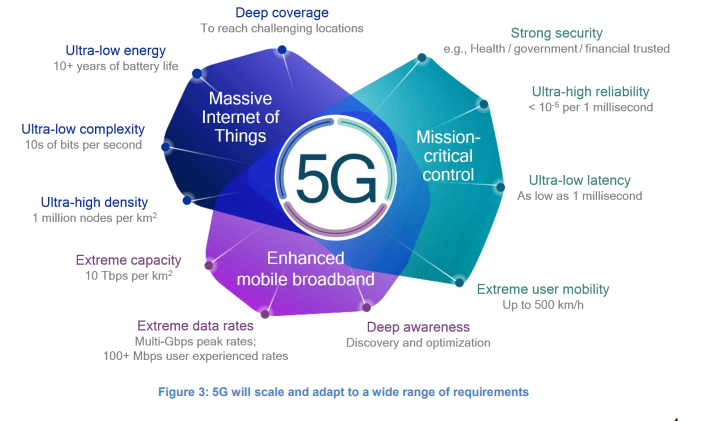

The 5th generation of mobile network or more commonly known as 5G is the new global standard. Just like its predecessors 1G, 2G, 3G, and 4G; 5G offers a completely different spectrum.
One of the key features of ChatGPT is its ability to generate human-like text, including the use of appropriate grammar, punctuation, and even style. This makes it particularly useful for a wide range of applications, such as chatbots, virtual assistants, and automated writing.
In order to use ChatGPT, you first need to fine-tune the model on a specific task or dataset. This can be done using the Hugging Face's transformers library, which allows you to easily load the pre-trained ChatGPT model and fine-tune it on your own data.
According to a report by GSMA, the worldwide median download speed over 5G was 954% faster than that over 4G during Q3 2020. For better understanding, with a 5G network, you would be able to download a 2 hours movie within 10 seconds as compared to 7 minutes for 4G. That being said, there are several determining factors such as location and network traffic that can determine the download speed.
Here’s what the previous generations of the mobile network were like.
First Generation (1G): The first-ever implementation of the mobile network with the delivery of analog
voice.
Second Generation (2G): The introduction of digital voice. One of the most common examples being CDMA
(Code
Division Multiple Access.)
Third Generation (3G): The implementation and mass usage of mobile data. CDMA 2000 was one of them.
Fourth Generation (4G): An enhancement to the era of mobile broadbands.

Basically, every new iteration was designed to provide users with more connectivity, while improving the
speed and reliability all together. 5G is next on the line with a much better experience than ever
before.
5G is used across three main types of connected services, including enhanced mobile
broadband, mission-critical communications, and the massive IoT. A defining capability of 5G is that it
is designed for forward compatibility—the ability to flexibly support future services that are unknown
today.

Enhanced mobile broadband
In addition to making our smartphones better, 5G mobile technology can usher in new immersive
experiences such as VR and AR with faster, more uniform data rates, lower latency, and lower
cost-per-bit.
Mission-critical communications
5G can enable new services that can transform industries with ultra-reliable, available, low-latency
links like remote control of critical infrastructure, vehicles, and medical procedures.
Massive IoT
5G is meant to seamlessly connect a massive number of embedded sensors in virtually everything through
the ability to scale down in data rates, power, and mobility—providing extremely lean and low-cost
connectivity solutions.
Copyright © 2023 AdilJamal